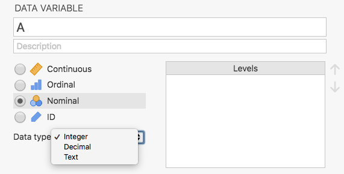

Chapter 3 Getting started with jamovi
Robots are nice to work with. –Roger Zelazny13
In this chapter I’ll discuss how to get started in jamovi. I’ll briefly talk about how to download and install jamovi, but most of the chapter will be focused on getting you started with finding your way around the jamovi GUI. Our goal in this chapter is not to learn any statistical concepts: we’re just trying to learn the basics of how jamovi works and get comfortable interacting with the system. To do this we’ll spend a bit of time looking at datasets and variables. In doing so, you’ll get a bit of a feel for what it’s like to work in jamovi.
However, before going into any of the specifics, it’s worth talking a little about why you might want to use jamovi at all. Given that you’re reading this you’ve probably got your own reasons. However, if those reasons are “because that’s what my stats class uses,” it might be worth explaining a little why your lecturer has chosen to use jamovi for the class. Of course, I don’t really know why other people choose jamovi so I’m really talking about why I use it.
- It’s sort of obvious but worth saying anyway: doing your statistics on a computer is faster, easier and more powerful than doing statistics by hand. Computers excel at mindless repetitive tasks, and a lot of statistical calculations are both mindless and repetitive. For most people the only reason to ever do statistical calculations with pencil and paper is for learning purposes. In my class I do occasionally suggest doing some calculations that way, but the only real value to it is pedagogical. It does help you to get a “feel” for statistics to do some calculations yourself, so it’s worth doing it once. But only once!
- Doing statistics in a conventional spreadsheet (e.g., Microsoft Excel) is generally a bad idea in the long run. Although many people likely feel more familiar with them, spreadsheets are very limited in terms of what analyses they allow you do. If you get into the habit of trying to do your real life data analysis using spreadsheets then you’ve dug yourself into a very deep hole.
- Avoiding proprietary software is a very good idea. There are a lot of commercial packages out there that you can buy, some of which I like and some of which I don’t. They’re usually very glossy in their appearance and generally very powerful (much more powerful than spreadsheets). However, they’re also very expensive. Usually, the company sells “student versions” (crippled versions of the real thing) very cheaply, and then they they sell full powered “educational versions” at a price that makes me wince. They will also sell commercial licences with a staggeringly high price tag. The business model here is to suck you in during your student days and then leave you dependent on their tools when you go out into the real world. It’s hard to blame them for trying, but personally I’m not in favour of shelling out thousands of dollars if I can avoid it. And you can avoid it. If you make use of packages like jamovi that are open source and free you never get trapped having to pay exorbitant licensing fees.
- Something that you might not appreciate now, but will love later on if you do anything involving data analysis, is the fact that jamovi is basically a sophisticated front end for the free R statistical programming language. When you download and install R you get all the basic “packages” and those are very powerful on their own. However, because R is so open and so widely used, it’s become something of a standard tool in statistics and so lots of people write their own packages that extend the system. And these are freely available too. One of the consequences of this, I’ve noticed, is that if you look at recent advanced data analysis textbooks then a lot of them use R.
Those are the main reasons I use jamovi. It’s not without its flaws, though. It’s relatively new14 so there is not a huge set of textbooks and other resources to support it, and it has a few annoying quirks that we’re all pretty much stuck with, but on the whole I think the strengths outweigh the weakness; more so than any other option I’ve encountered so far.
3.1 Installing jamovi
Okay, enough with the sales pitch. Let’s get started. Just as with any piece of software, jamovi needs to be installed on a “computer,” which is a magical box that does cool things and delivers free ponies. Or something along those lines; I may be confusing computers with the iPad marketing campaigns. Anyway, jamovi is freely distributed online and you can download it from the jamovi homepage, which is:
At the top of the page, under the heading “Download,” you’ll see separate links for Windows users, Mac users, and Linux users. If you follow the relevant link you’ll see that the online instructions are pretty self-explanatory. As of this writing, the current version of jamovi is 0.9, but they usually issue updates every few months, so you’ll probably have a newer version.15
3.1.1 Starting up jamovi
One way or another, regardless of what operating system you’re using, it’s time to open jamovi and get started. When first starting jamovi you will be presented with a user interface which looks something like Figure 3.1.
Figure 3.1: jamovi looks like this when you start it
To the left is the spreadsheet view, and to the right is where the results of statistical tests appear. Down the middle is a bar separating these two regions and this can be dragged to the left or the right to change their sizes.
It is possible to simply begin typing values into the jamovi spreadsheet as you would in any other spreadsheet software. Alternatively, existing data sets in the CSV (.csv) file format can be opened in jamovi. Additionally, you can easily import SPSS, SAS, Stata and JASP files directly into jamovi. To open a file select the File tab (three horizontal lines signify this tab) at the top left hand corner, select ‘Open’ and then choose from the files listed on ‘Browse’ depending on whether you want to open an example or a file stored on your computer.
3.2 Analyses
Analyses can be selected from the analysis ribbon or menu along the top. Selecting an analysis will present an ‘options panel’ for that particular analysis, allowing you to assign different variables to different parts of the analysis, and select different options. At the same time, the results for the analysis will appear in the right ‘Results panel’ and will update in real-time as you make changes to the options.
When you have the analysis set up correctly you can dismiss the analysis options by clicking the arrow to the top right of the optional panel. If you wish to return to these options, you can click on the results that were produced. In this way, you can return to any analysis that you (or say, a colleague) created earlier.
If you decide you no longer need a particular analysis, you can remove it with the results context menu. Right-clicking on the analysis results will bring up a menu and by selecting ‘Analysis’ and then ‘Remove’ the analysis can be removed. But more on this later. First, let’s take a more detailed look at the spreadsheet view.
3.3 The spreadsheet
In jamovi data is represented in a spreadsheet with each column representing a ‘variable’ and each row representing a ‘case’ or ‘participant.’
3.3.1 Variables
The most commonly used variables in jamovi are ‘Data Variables,’ these variables simply contain data either loaded from a data file, or ‘typed in’ by the user. Data variables can be one of three measurement levels:

These levels are designated by the symbol in the header of the variable’s column.
The ID variable type is unique to jamovi. It’s intended for variables that contain identifiers that you would almost never want to analyse. For example, a persons name, or a participant ID. Specifying an ID variable type can improve performance when interacting with very large data sets.
- Nominal variables are for categorical variables which are text labels, for example a column called Gender with the values Male and Female would be nominal. So would a person’s name. Nominal variable values can also have a numeric value. These variables are used most often when importing data which codes values with numbers rather than text. For example, a column in a dataset may contain the values 1 for males, and 2 for females. It is possible to add nice ‘human-readable’ labels to these values with the variable editor (more on this later).
- Ordinal variables are like Nominal variables, except the values have a specific order. An example is a Likert scale with 3 being ‘strongly agree’ and -3 being ‘strongly disagree.’
- Continuous variables are variables which exist on a continuous scale. Examples might be height or weight. This is also referred to as ‘Interval’ or ‘Ratio scale.’
In addition, you can also specify different data types: variables have a data type of either ‘Text,’ ‘Integer’ or ‘Decimal.’
When starting with a blank spreadsheet and typing values in the variable type will change automatically depending on the data you enter. This is a good way to get a feel for which variable types go with which sorts of data. Similarly, when opening a data file jamovi will try and guess the variable type from the data in each column. In both cases this automatic approach may not be correct, and it may be necessary to manually specify the variable type with the variable editor.
The variable editor can be opened by selecting ‘Setup’ from the data tab or by double-clicking on the variable column header. The variable editor allows you to change the name of the variable and, for data variables, the variable type, the order of the levels, and the label displayed for each level. Changes can be applied by clicking the ‘tick’ to the top right. The variable editor can be dismissed by clicking the ‘Hide’ arrow.
New variables can be inserted or appended to the data set using the ‘add’ button from the data ribbon. The ‘add’ button also allows the addition of computed variables.
3.3.2 Computed variables
Computed Variables are those which take their value by performing a computation on other variables. Computed Variables can be used for a range of purposes, including log transforms, z-scores, sum-scores, negative scoring and means.
Computed variables can be added to the data set with the ‘add’ button available on the data tab. This will produce a formula box where you can specify the formula. The usual arithmetic operators are available. Some examples of formulas are:
A + B
LOG10(len)
MEAN(A, B)
(dose - VMEAN(dose)) / VSTDEV(dose)
In order, these are the sum of A and B, a log (base 10) transform of len, the mean of A and B, and the z-score of the variable dose. Figure 3.2 below shows the jamovi screen for the new variable computed as the z-score of dose (from the ‘Tooth Growth’ example data set).
Figure 3.2: A newly computed variable, the z-score of ‘dose’
V-functions Several functions are already available in jamovi and available from the drop down box labelled fx. A number of functions appear in pairs, one prefixed with a V and the other not. V functions perform their calculation on a variable as a whole, where as non-V functions perform their calculation row by row. For example, MEAN(A, B) will produce the mean of A and B for each row. Where as VMEAN(A) gives the mean of all the values in A.
3.3.3 Copy and Paste
jamovi produces nice American Psychological Association (APA) formatted tables and attractive plots. It is often useful to be able to copy and paste these, perhaps into a Word document, or into an email to a colleague. To copy results right click on the object of interest and from the menu select exactly what you want to copy. The menu allows you to choose to copy only the image or the entire analysis. Selecting “copy” copies the content to the clipboard and this can be pasted into other programs in the usual way. You can practice this later on when we do some analyses.
3.3.4 Syntax mode
jamovi also provides an “R Syntax Mode.” In this mode jamovi produces equivalent R code for each analysis. To change to syntax mode, select the Application menu to the top right of jamovi (a button with three vertical dots) and click the “Syntax mode” checkbox there. You can turn off syntax mode by clicking this a second time.
In syntax mode analyses continue to operate as before but now they produce R syntax, and ‘ascii output’ like an R session. Like all results objects in jamovi, you can right click on these items (including the R syntax) and copy and paste them, for example into an R session. At present, the provided R syntax does not include the data import step and so this must be performed manually in R. There are many resources explaining how to import data into R and if you are interested we recommend you take a look at these; just search on the interweb.
3.4 Loading data in jamovi
There are several different types of files that are likely to be relevant to us when doing data analysis. There are two in particular that are especially important from the perspective of this book:
- jamovi files are those with a
.omvfile extension. This is the standard kind of file that jamovi uses to store data, and variables and analyses. - Comma separated value (csv) files} are those with a
.csvfile extension. These are just regular old text files and they can be opened with many different software programs. It’s quite typical for people to store data in csv files, precisely because they’re so simple.
There are also several other kinds of data file that you might want to import into jamovi. For instance, you might want to open Microsoft Excel spreadsheets .xls files), or data files that have been saved in the native file formats for other statistics software, such as SPSS or SAS. Whichever file formats you are using, it’s a good idea to create a folder or folders especially for your jamovi data sets and analyses and to make sure you keep these backed up regularly.
3.4.1 Importing data from csv files
One quite commonly used data format is the humble “comma separated value” file, also called a csv file, and usually bearing the file extension .csv. csv files are just plain old-fashioned text files and what they store is basically just a table of data. This is illustrated in Figure 3.3, which shows a file called booksales.csv that I’ve created. As you can see, each row represents the book sales data for one month. The first row doesn’t contain actual data though, it has the names of the variables.
Figure 3.3: The booksales.csv data file. On the left I’ve opened the file using a spreadsheet program (OpenOffice), which shows that the file is basically a table. On the right the same file is open in a standard text editor (the TextEdit program on a Mac), which shows how the file is formatted. The entries in the table are wrapped in quote marks and separated by commas.
It’s easy to open csv files in jamovi. From the top left menu (the button with three parallel lines) choose ‘Open’ and browse to where you have stored the csv file on your computer. If you’re on a Mac, it’ll look like the usual Finder window that you use to choose a file; on Windows it looks like an Explorer window. An example of what it looks like on a Mac is shown in Figure (fig:fileopen). I’m assuming that you’re familiar with your own computer, so you should have no problem finding the csv file that you want to import! Find the one you want, then click on the ‘Open’ button.

Figure 3.4: A dialog box on a Mac asking you to select the csv file jamovi should try to import. Mac users will recognise this immediately, it’s the usual way in which a Mac asks you to find a file. Windows users won’t see this, instead they’ll see the usual explorer window that Windows always gives you when it wants you to select a file.
There are a few things that you can check to make sure that the data gets imported correctly:
- Heading. Does the first row of the file contain the names for each variable - a “header” row? The
booksales.csvfile has a header, so that’s a yes. - Separator. What character is used to separate different entries? In most csv files this will be a comma (it is “comma separated” after all).
- Decimal. What character is used to specify the decimal point? In English speaking countries this is almost always a period (i.e.,
.). That’s not universally true though, many European countries use a comma. - Quote. What character is used to denote a block of text? That’s usually going to be a double quote mark ". It is for the
booksales.csvfile.
3.5 Importing unusual data files
Throughout this book I’ve assumed that your data are stored as a jamovi .omv file or as a “properly”’ formatted csv file. However, in real life that’s not a terribly plausible assumption to make so I’d better talk about some of the other possibilities that you might run into.
3.5.1 Loading data from text files
The first thing I should point out is that if your data are saved as a text file but aren’t quite in the proper csv format then there’s still a pretty good chance that jamovi will be able to open it. You just need to try it and see if it works. Sometimes though you will need to change some of the formatting. The ones that I’ve often found myself needing to change are:
header. A lot of the time when you’re storing data as a csv file the first row actually contains the column names and not data. If that’s not true then it’s a good idea to open up the csv file in a spreadsheet programme such as Open Office and add the header row manually.sep. As the name “comma separated value” indicates, the values in a row of a csv file are usually separated by commas. This isn’t universal, however. In Europe the decimal point is typically written as,instead of.and as a consequence it would be somewhat awkward to use,as the separator. Therefore it is not unusual to use;instead of,as the separator. At other times, I’ve seen a TAB character used.quote. It’s conventional in csv files to include a quoting character for textual data. As you can see by looking at thebooksales.csvfile, this is usually a double quote character,". But sometimes there is no quoting character at all, or you might see a single quote mark'used instead.skip. It’s actually very common to receive CSV files in which the first few rows have nothing to do with the actual data. Instead, they provide a human readable summary of where the data came from, or maybe they include some technical info that doesn’t relate to the data.missing values. Often you’ll get given data with missing values. For one reason or another, some entries in the table are missing. The data file needs to include a “special” value to indicate that the entry is missing. By default jamovi assumes that this value is9916, for both numeric and text data, so you should make sure that, where necessary, all missing values in the csv file are replaced with99(or-9999; whichever you choose) before opening / importing the file into jamovi. Once you have opened / imported the file into jamovi all the missing values are converted to blank cells in the jamovi spreadsheet view.
3.5.2 Loading data from SPSS (and other statistics packages)
The commands listed above are the main ones we’ll need for data files in this book. But in real life we have many more possibilities. For example, you might want to read data files in from other statistics programs. Since SPSS is probably the most widely used statistics package in psychology, it’s worth mentioning that jamovi can also import SPSS data files (file extension .sav). Just follow the instructions above for how to open a csv file, but this time navigate to the .sav file you want to import. For SPSS files, jamovi will regard all values as missing if they are regarded as “system missing” files in SPSS. The ‘Default missings’ value does not seem to work as expected when importing SPSS files, so be aware of this - you might need another step: import the SPSS file into jamovi, then export as a csv file before re-opening in jamovi.17.
And that’s pretty much it, at least as far as SPSS goes. As far as other statistical software goes, jamovi can also directly open / import SAS and STATA files.
3.5.3 Loading Excel files
A different problem is posed by Excel files. Despite years of yelling at people for sending data to me encoded in a proprietary data format, I get sent a lot of Excel files. The way to handle Excel files is to open them up first in Excel or another spreadsheet programme that can handle Excel files, and then export the data as a csv file before opening / importing the csv file into jamovi.
3.6 Changing data from one level to another
Sometimes you want to change the variable level. This can happen for all sorts of reasons. Sometimes when you import data from files, it can come to you in the wrong format. Numbers sometimes get imported as nominal, text values. Dates may get imported as text. ParticipantID values can sometimes be read as continuous: nominal values can sometimes be read as ordinal or even continuous. There’s a good chance that sometimes you’ll want to convert a variable from one measurement level into another one. Or, to use the correct term, you want to coerce the variable from one class into another.
In 3.3 we saw how to specify different variable levels, and if you want to change a variable’s measurement level then you can do this in the jamovi data view for that variable. Just click the check box for the measurement level you want - continuous, ordinal, or nominal.
3.7 Installing add-on modules into jamovi
A really great feature of jamovi is the ability to install add-on modules from the jamovi library. These add-on modules have been developed by the jamovi community, i.e., jamovi users and developers who have created special software add-ons that do other, usually more advanced, analyses that go beyond the capabilities of the base jamovi program.
To install add-on modules, just click on the large “+” in the top right of the jamovi window, select ‘jamovi-library’ and then browse through the various add-on modules that are available. Choose the one(s) you want, and then install them, as in Figure 3.5. It’s that easy. The newly installed modules can then be accessed from the “Analyses” button bar. Try it…useful add-on modules to install include “scatr” (added under “Descriptives”) and “R j.”
Figure 3.5: Installing add-on modules in jamovi
3.8 Quitting jamovi
There’s one last thing I should cover in this chapter: how to quit jamovi. It’s not hard, just close the program the same way you would any other program. However, what you might want to do before you quit is save your work! There are two parts to this: saving any changes to the data set, and saving the analyses that you ran.
It is good practice to save any changes to the data set as a new data set. That way you can always go back to the original data. To save any changes in jamovi, select “Export”…“Data” from the main jamovi menu (button with three horizontal bars in the top left) and create a new file name for the changed data set.
Alternatively, you can save both the changed data and any analyses you have undertaken by saving as a jamovi file. To do this, from the main jamovi menu select “Save as” and type in a file name for this “jamovi file (.omv).” Remember to save the file in a location where you can find it again later. I usually create a new folder for specific data sets and analyses.
3.9 Summary
- Section 3.1. We downloaded and installed jamovi, and started it up.
- Section 3.2. We very briefly oriented to the part of jamovi where analyses are done and results appear, but then deferred this until later in the book.
- Section 3.3. We spent more time looking at the spreadsheet part of jamovi, and considered different variable types, and how to compute new variables.
- Section 3.4. We also saw how to load data files in jamovi.
- Section 3.5. Then we figured out how to open other data files, from different file types.
- Section 3.6. And saw that sometimes we need to coerce data from one type to another.
- Section 3.7. Installing add-on modules from the jamovi community really extends jamovi capabilities.
- Section 3.8. Finally, we looked at good practice in terms of saving your data set and analyses when you have finished and are about to quit jamovi.
Source: Dismal Light (1968)↩︎
As of writing this in August 2018.↩︎
Although jamovi is updated frequently it doesn’t usually make much of a difference for the sort of work we’ll do in this book. In fact, during the writing of the book I upgraded several times and it didn’t make much difference at all to what is in this book.↩︎
You can change the default value for missing values in jamovi from the top right menu (three vertical dots), but this only works at the time of importing data files into jamovi. The default missing value in the dataset should not be a valid number associated with any of the variables, e.g. you could use
-9999as this is unlikely to be a valid value.↩︎I know this is a bot of a fudge, but it does work and hopefully this will be fixed in a later version of jamovi.↩︎